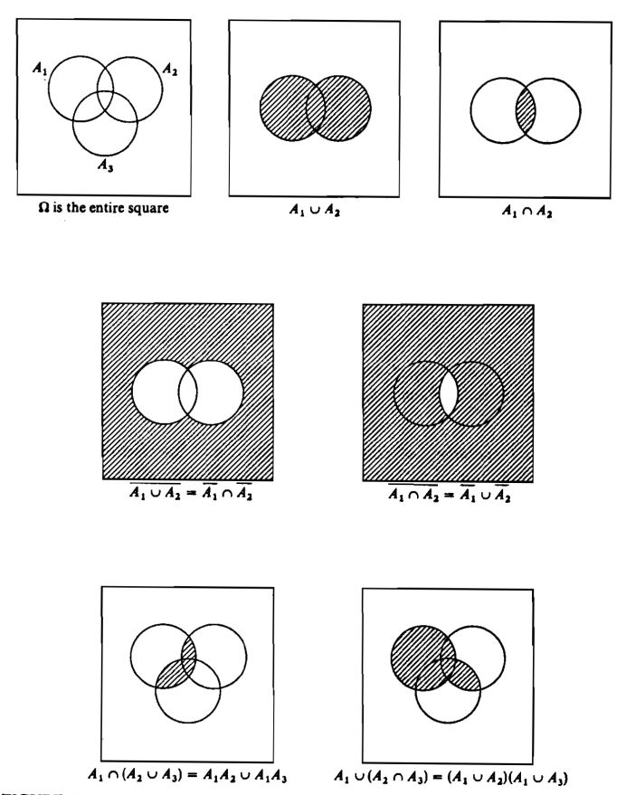
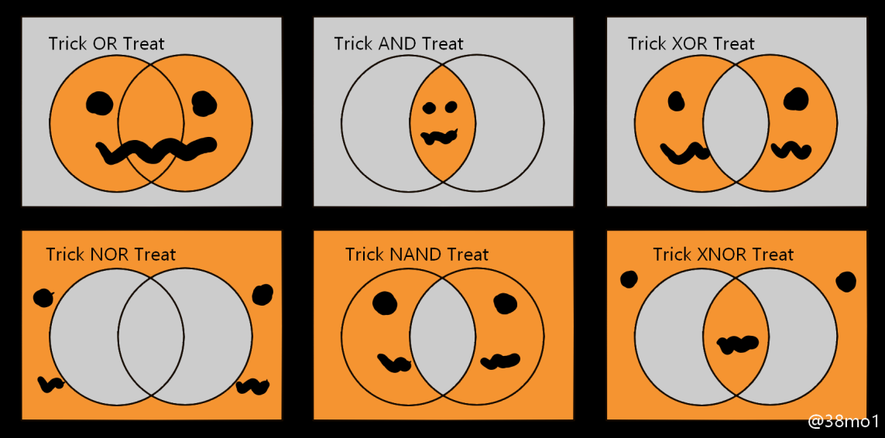
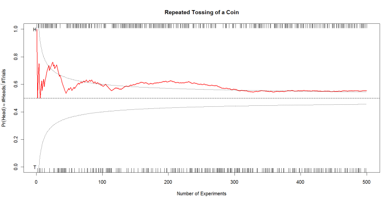
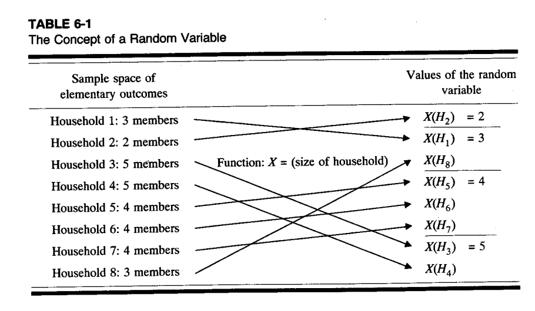

Chapter 05 (Part A): Probabilities and Random Variables
1 Probability (Part A)
Part A covers basic probability theory (including appendix 5a) up to the concept of a random variable.
Part B will review selected discrete and continuous distributions, the concepts of expectation and variance, and a brief overview over bivariate distributions.
2 Basic Definitions: Elementary Outcomes, Events and Set Theory
Note: Set theory takes a distinct role in GISciences. E.g., areas can be conceived as a set of infinitely small points. Professional literature expresses many spatial operations in set theoretical terms. Furthermore, SQL database concepts and operations are framed as set theoretic operations.
2.1 Definitions: Elementary Outcomes and Sample Space
Each individual possible outcome \(\omega_i\) (small omega) of an experiment is known as an elementary outcome, and the set of all possible elementary outcomes denotes the sample space \(\Omega = \{\omega_1, \ldots, \omega_n\}\) (capital Omega).
Elementary outcomes are disjunct, i.e., they do not overlap.
2.2 Definition: Event
- An event is a subset of the sample space, i.e., \(A \equiv \{\omega_2, \omega_5\}\), with elementary outcomes \(\omega_2\) and \(\omega_5\) constituting the event \(A\).
2.3 Definition: Empty Set
- An empty set does not contain any elementary outcomes and is denoted by \(\varnothing = \{\}\).
2.4 Definition: Complementary Event \(\bar{A}\)
- Let \(\Omega \equiv \{\omega_1, \omega_2, \omega_3, \omega_4, \omega_5\}\) and event \(A \equiv \{\omega_2, \omega_5\}\) then \(\bar{A} = \Omega - A = \{\omega_1, \omega_3, \omega_4\}\)
2.5 Definition: Subset
- Definition: a subset is a set whose members are also elements of another set.
- Let \(A = \{\omega_1, \omega_2\}\) and \(B = \{\omega_1, \omega_2, \omega_3\}\) then \(A \subset B\)
- Any event \(A\) is a subset of the sample space: \(A \subset \Omega\)
- A set \(A\) and its complement \(\bar{A}\) can never be subsets \(A \not\subset \bar{A}\)
2.6 Definition: Event Intersection
- The intersection symbol is \(\cap\), which is also the logical AND. It means that both intersecting events must be satisfied simultaneously being members of their parent sets.
- Let \(A = \{\omega_1, \omega_2, \omega_4\}\) and \(B = \{\omega_1, \omega_2, \omega_3\}\) then \(A \cap B = \{\omega_1, \omega_2\}\)
- If \(A \cap B \neq \varnothing\) then \(A \cap B \subset A\) and \(A \cap B \subset B\)
2.7 Definition: Mutually Exclusive Events
- The intersection of mutually exclusive events is the empty set: \(A \cap B = \varnothing\)
2.8 Definition: Union
The Union symbol is \(\cup\), which is also the logical Either-OR. Thus, either event \(A\) or event \(B\) or both events happen together.
Let \(A = \{\omega_1, \omega_2, \omega_4\}\) and \(B = \{\omega_1, \omega_2, \omega_3\}\) then \(A \cup B = \{\omega_1, \omega_2, \omega_3, \omega_4\}\).
2.9 Venn-Diagrams
Some Venn-Diagrams highlighting the intersection, union and complement:

3 Probabilities
3.1 Postulated Properties of Probabilities (Kolmogorov’s axioms)
(pp. 203-204)
\(0 \leq \Pr(\omega_i) \leq 1\) for all \(\omega_i \in \Omega\). In a deterministic world (no uncertainty) either \(\Pr(\omega_i) = 0\) or \(\Pr(\omega_i) = 1\).
\(\Pr(A) = \sum_{\omega_i \in A} \Pr(\omega_i)\). This property requires that the elementary outcomes, which constitute the event \(A\), are mutually exclusive.
\(\Pr(\Omega) = 1\) and \(\Pr(\varnothing) = 0\). This can be derived by deductive logic from the previous properties.
3.2 Definition of Probabilities
Probabilities, as measure of uncertainties or likelihood of an experiment with many possible outcomes, can be obtained from several perspectives:
3.2.1 [a] Analytical: a probability model based on counting rules
This perspective is usually based on the appealing assumption that all elementary have equal probability \(\Pr(\omega_i) = \frac{1}{n}\).
The equal probability assumption leads to the classical definition:
\[\Pr(A) = \frac{|A|}{|\Omega|}\]
with \(|\cdot|\) denoting the number of elements in a set.
Criticism: [a] Circular definition because of the use of the definition of the probability in \(\Pr(\omega_i) = \frac{1}{n}\); [b] the event and sample spaces need to be countable.
3.2.2 [b] Relative Frequency
Probabilities are obtained by repeating a random experiment under fixed conditions over a very large number of independent trials; e.g.,
\[\Pr(success) = \lim_{n \to \infty} \left(\frac{number\ of\ successes}{total\ number\ of\ experiments}\right)\]
Larger numbers of repetitions lead to more accurate estimates.
Criticism: [a] Theoretically requires infinite number of trials. [b] Conditions underlying each trial cannot be held indefinitely constant. [c] Some experiments cannot be repeated indefinitely (e.g., lifespan of light bulbs in a production process)
See the script PROBFREQUENT.R:
3.2.2.1 Changho’s experiment: 500 random tosses of a fair coin

3.2.2.2 Instructor’s Experiment: 500 random tosses of a fair coin

3.2.3 [c] Subjective Probabilities
A person assigns subjectively a probability to a possibly random event.
These subjective assessments may originate from personal experiences or “divine intuition”.
For experience-based probabilities one assumes, that under similar circumstances one would observe an event occurring with a particular frequency.
Criticism: [a] The problem with subjective probabilities is that an external observer cannot reproduce the subjective probability (i.e., we cannot read people’s mind); [b] Subjective probabilities may not necessarily satisfy the Kolmogorov’s axioms.
4 Counting Rules for Computing Probabilities
Counting rules can be used to evaluate theoretically the number of elementary outcomes \(|A|\) that satisfy the criteria of an event \(A\) (i.e., the event space) and the number of all possible elementary outcomes \(|\Omega|\) in the sample space. These allow developing, depending on the underlying assumptions, models for specific probability distributions.
The analytic/geometric probability \(\Pr(A) = \frac{|A|}{|\Omega|}\) of event \(A\) provides the foundation of a counting rule-based probabilities.
One just needs to enumerate all possible number of events in numerator \(|A|\) and all possible events in the denominator \(|\Omega|\).
5 Combinatorics
The rules of combinatorics can be used to evaluate the size of the numerator and denominator.
5.1 Definition: Combination
A set \(C\) of distinguishable objects regardless of their order.
Example: \(\{a, b\} = \{b, a\}\). Both are just one event.
5.2 Definition: Permutations
A set \(P\) of distinguishable objects with distinct ordering (order is relevant here).
Example: \(\{a, b\} \neq \{b, a\}\). Both are separate events.
5.3 Definition: Product Rule (p 247)
Suppose there are \(r\) sets of different objects. Each set \(i\) has \(n_i\) objects. If we select one object from each set, then there are in total \(\prod_{i=1}^{r} n_i = n_1 \cdot n_2 \cdots n_r\) distinct combinations.
Example: we have \(n\) objects (set 1) and we sample one object. From the remaining \(n-1\) objects (now set 2) we sample again one object. Then there are \(n \cdot (n-1)\) distinct combinations (i.e., pairs of events).
5.4 Sampling Schemes
Evaluation: Sampling with or without replacement and with (permutation) or without (combination) considering the order of events.
5.4.1 Potential permutations by sampling twice from the set \(S = \{A, B, C, D, E\}\) with replacement:
\[S \times S = \begin{pmatrix} \{\mathbf{A}, \mathbf{A}\} & \{A, B\} & \{A, C\} & \{A, D\} & \{A, E\} \\ \{B, A\} & \{\mathbf{B}, \mathbf{B}\} & \{B, C\} & \{B, D\} & \{B, E\} \\ \{C, A\} & \{C, B\} & \{\mathbf{C}, \mathbf{C}\} & \{C, D\} & \{C, E\} \\ \{D, A\} & \{D, B\} & \{D, C\} & \{\mathbf{D}, \mathbf{D}\} & \{D, E\} \\ \{E, A\} & \{E, B\} & \{E, C\} & \{E, D\} & \{\mathbf{E}, \mathbf{E}\} \end{pmatrix}\]
The symbol \(\times\) denotes the Cartesian Product of two sets.
5.4.2 Recall the definition of the factorial:
\[n! = 1 \cdot 2 \cdots n\]
with \(0! = 1\) by convention.
5.4.3 Classification scheme for sampling twice from \(S = \{A, B, C, D, E\}\):
\(n\) expresses the number of different elements in the sample space and \(p\) is the size of sample (repeated samples from the set \(S\)).
With replacement and with considering order (i.e., permutation): \(5 \cdot 5 = 25\)
General: \(n^p\)
Without replacement and with considering the order (i.e., permutation): \(5 \cdot 4 = 20\)
General Permutations: \[P_r^n = n \cdot (n-1) \cdots (n-r+1) = \frac{n!}{(n-r)!}\]
Without replacement and without considering order (i.e., combination): \(5 \cdot 4 / 2 = 10\)
General Combinations: \[C_r^n = P_r^n / r! = \left[n \cdot (n-1) \cdots (n-r+1)\right] / \left[1 \cdot 2 \cdots r\right] = \frac{n!}{(n-r)! \cdot r!} = \binom{n}{r}\]
With replacement and without considering order (i.e., combination): \(6 \cdot 5 / 2 = 15\)
General: \[\binom{n+r-1}{r} = \frac{(n+r-1)!}{(n-1)! \cdot r!}\]
5.5 Hypergeometric Rule (p. 249)
The Hypergeometric Rule is a combination of the product rule and the combination rule.
Suppose there are \(p\) sets of objects. Each set has \(n_i\) objects with the total number of objects being \(\sum_{i=1}^{p} n_i = n\).
From each set we select \(r_i\) with \(r_i \leq n_i\) objects. The different number of possible combinations is:
\[\binom{n_1}{r_1} \cdot \binom{n_2}{r_2} \cdots \binom{n_p}{r_p}\]
6 Basic Probability Theorems
6.1 Cross-tabulation of Events
The sample space \(\Omega = A \times B = \{A_1 \cap B_1, A_1 \cap B_2, A_1 \cap B_3, A_2 \cap B_1, A_2 \cap B_2, A_2 \cap B_3\}\) is derived by evaluating all pairwise combinations of events \(A = \{A_1, A_2\}\) with events \(B = \{B_1, B_2, B_3\}\).
Let us arrange the probabilities of these events and their intersection in a cross-tabulation:
| \(B_1\) | \(B_2\) | \(B_3\) | \(\sum\) | |
|---|---|---|---|---|
| \(A_1\) | \(\Pr(A_1 \cap B_1)\) | \(\Pr(A_1 \cap B_2)\) | \(\Pr(A_1 \cap B_3)\) | \(\Pr(A_1)\) |
| \(A_2\) | \(\Pr(A_2 \cap B_1)\) | \(\Pr(A_2 \cap B_2)\) | \(\Pr(A_2 \cap B_3)\) | \(\Pr(A_2)\) |
| \(\sum\) | \(\Pr(B_1)\) | \(\Pr(B_2)\) | \(\Pr(B_3)\) | \(\Pr(\Omega) = 1.0\) |
6.2 Marginal Probabilities
The marginal probabilities of individual events \(A_i\) or \(B_j\) are:
\[\Pr(A_i) = \Pr(A_i \cap B_1) + \Pr(A_i \cap B_2) + \Pr(A_i \cap B_3)\]
and
\[\Pr(B_j) = \Pr(A_1 \cap B_j) + \Pr(A_2 \cap B_j)\]
Why are we allowed to do this?
Answer: The intersections \(\Pr(A_i \cap B_j)\) are based mutually exclusive pairs of events.
6.3 Definition: Addition Theorem (p 207)
Warning: Look out for the intersection of events:
\[\Pr(A \cup B) = \Pr(A) + \Pr(B) - \Pr(A \cap B)\]
Example: \(\Pr(A_i \cup B_j) = \Pr(A_i) + \Pr(B_j) - \Pr(A_i \cap B_j)\)
Special rule for mutually exclusive events, i.e, \(A_i \cap B_j = \varnothing\):
\[\Pr(A_i \cup B_j) = \Pr(A_i) + \Pr(B_j)\]
6.4 Definition: Complementation Theorem (p. 208)
\[\Pr(\bar{A}) = \underbrace{1}_{=\Pr(\Omega)} - \Pr(A)\]
6.5 Definition: Conditional Probability (p 208)
The probability of an event \(A\) may change once another event \(B\) has taken place ahead of it.
This allows predicting the probabilities of events with the knowledge of a conditioning event \(B\):
General rule:
\[\Pr(A|B) = \frac{\Pr(A \cap B)}{\Pr(B)}\]
How to remember the rule: The event that conditions the other event (written after “|”) is in the denominator.
Note: Some books use the mathematical notation \(\Pr(A, B) \Leftrightarrow \Pr(A \cap B)\) for the probability of the intersection of events.
6.6 Definition: Multiplication Theorem (p 209)
Simple algebraic transformation of the definition of the conditional probabilities gives:
\[\Pr(A \cap B) = \Pr(A|B) \cdot \Pr(B)\] \[= \Pr(B|A) \cdot \Pr(A)\]
6.7 Definition: Statistical Independent Events (p 209)
Under statistical independence, the occurrence of a conditioning event \(B\) does not change the probability for another event:
\[\Pr(A) = \Pr(A|B)\]
Equivalently using the definition of the conditional probability, we can write using the multiplication theorem of probabilities for independent events:
\[\Pr(A \cap B) = \Pr(A) \cdot \Pr(B)\]
7 The Bayes’ Theorem (left for the homework)
7.1 Derivation
From the multiplication theorem we have:
\[\Pr(A \cap B) = \Pr(A|B) \cdot \Pr(B) \quad \text{or} \quad \Pr(A \cap B) = \Pr(B|A) \cdot \Pr(A)\]
\[\Leftrightarrow \Pr(A|B) \cdot \Pr(B) = \Pr(B|A) \cdot \Pr(A)\]
\[\Rightarrow \Pr(A|B) = \frac{\Pr(B|A) \cdot \Pr(A)}{\Pr(B)} \quad \text{or alternatively,} \quad \Pr(B|A) = \frac{\Pr(A|B) \cdot \Pr(B)}{\Pr(A)}\]
7.2 Interpretation
For the Bayesian equation:
\[\Pr(B|A) = \frac{\Pr(A|B) \cdot \Pr(B)}{\Pr(A)}\]
- The probability \(\Pr(B)\) is called the a priori probability (first believe in the probability) of event \(B\)
- \(\Pr(B|A)\) is called the posteriori probability (revised probability) of event \(B\) after we have observed event \(A\).
- The probability \(\Pr(A|B)\) is called the likelihood of event \(A\) assuming event \(B\) has taken place. The likelihood is assumed to be externally known.
7.3 Total Probability
The total probability \(\Pr(A)\) for event \(A\) can be calculated using marginal probability equation:
\[\Pr(A) = \sum_{j=1}^{r} \Pr(A \cap B_j) = \sum_{j=1}^{r} \Pr(A|B_j) \cdot \Pr(B_j)\]
assuming \(\Pr(A|B_j)\) and \(\Pr(B_j)\ \forall j\) are externally given.
7.4 General Form of the Bayes’ Theorem
This gives the general form of the Bayes’ theorem:
\[\Pr(B_j|A) = \frac{\Pr(A|B_j) \cdot \Pr(B_j)}{\sum_{j=1}^{r} \Pr(A|B_j) \cdot \Pr(B_j)} \quad \text{for all events } B_j\]
7.5 Example: Paleontologist and Mosasaur
A paleontologist found downstream of a river some Mosasaur fragment.
He/she wishes to conduct an expedition into either basin \(B_1\) (with the area of 18 acres) or basin \(B_2\) (with the area of 10 acres) from where these fragments may have originated.
Research question: Which basin maximizes the likelihood of finding the skeleton?
7.5.1 Prior Probabilities
The prior probabilities of the basins are proportional to their size:
\[\Pr(B_1) = 18/(18+10) = 0.64 \quad \text{and} \quad \Pr(B_2) = 10/(18+10) = 0.36\]
The higher prior probabilities direct the paleontologist to basin \(B_1\).
7.5.2 Likelihood Information
Skeletons are only found in Cretaceous rock (event \(A\)). The proportions of Cretaceous rock in either basin is:
\[\Pr(A|B_1) = 0.35 \quad \text{and} \quad \Pr(A|B_2) = 0.80\]
7.5.3 Schematic Diagram
7.5.4 Total Probability
The total probability of Cretaceous rock in both basins is:
\[\Pr(A) = \Pr(A|B_1) \cdot \Pr(B_1) + \Pr(A|B_2) \cdot \Pr(B_2) = 0.35 \cdot 0.64 + 0.80 \cdot 0.36 = 0.512\]
7.5.5 Posteriori Probabilities
\[\Pr(B_1|A) = \frac{\Pr(A|B_1) \cdot \Pr(B_1)}{\Pr(A)}\] \[= \frac{0.35 \cdot 0.64}{0.512} = 0.4375\]
\[\Pr(B_2|A) = \frac{0.80 \cdot 0.36}{0.512} = 0.5625\]
7.5.6 Conclusion
The posteriori probabilities direct the paleontologist towards searching in basin \(B_2\).
8 Concept of a Random Variable

Assumption: A numerical characteristic is measurable for each object (i.e., elementary outcome) in a population (i.e., the sample space)
We can enumerate (or count) the different occurrence of this characteristic over all objects in the population.
8.1 Definition: Random Variable (p 210)

The function \(X(\cdot)\) measures the numerical population characteristic. It is usually denoted in the statistical literature by a capital letter, e.g., \(X\).
Why are events translated into numerical values?
Answer: To perform calculations, it is easier to work with numbers rather than with descriptive characteristics of elements in sets.
The probability of an event \(A\) and its associated random variable \(X(A)\) must be identical:
\[\Pr(A) = \Pr(X(A))\]
9 Footnotes
Def. Axiom: A self-evident principle or one that is intuitively accepted as being true without proof. In mathematics the axioms establish the basis for an argument.
Def. Theorem: A proposition that can be proven to the true by using explicit statements obtained from accepted axioms as argument.
10 Summary
This chapter covered the following key concepts:
- Elementary Outcomes and Sample Space - The building blocks of probability theory
- Set Operations - Intersection (\(\cap\)), Union (\(\cup\)), Complement (\(\bar{A}\))
- Kolmogorov’s Axioms - The three fundamental properties of probabilities
- Perspectives on Probability - Analytical, Relative Frequency, Subjective
- Combinatorics - Permutations and Combinations for counting
- Sampling Schemes - With/without replacement, with/without order
- Probability Theorems - Addition, Complementation, Conditional, Multiplication
- Statistical Independence - When events don’t affect each other
- Bayes’ Theorem - Updating probabilities with new information
- Random Variables - Mapping events to numerical values
Document created for GISC6301: Geo-Spatial Data Analysis Fundamentals